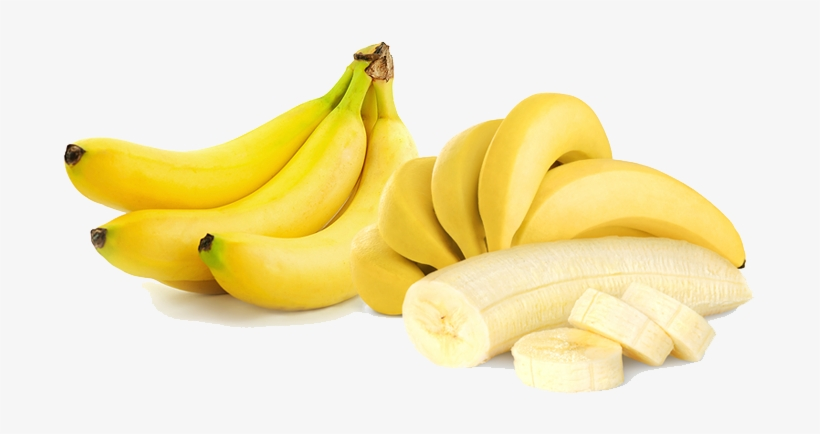

tentangbuah.com
Pisang

Pisang adalah jenis buah-buahan, atau buah yang dihasilkan
dari pohon buah Pisang. Buah Pisang biasanya berwarna merah kulitnya jika
masak dan (siap dimakan), namun bisa juga kulitnya berwarna hijau atau
kuning. Kulit buahnya agak lembek, daging buahnya keras. Buah ini memiliki
beberapa biji di dalamnya.
Orang mulai pertama kali menanam Pisang di Asia Tengah. Kini Pisang berkembang
di banyak daerah di dunia yang suhu udaranya lebih dingin. Nama ilmiah
pohon Pisang dalam bahasa Latin ialah Malus domestica. Pisang
budidaya adalah keturunan dari Malus sieversii asal Asia Tengah,
dengan sebagian genom dari Malus sylvestris (Pisang hutan/Pisang
liar).
Kebanyakan Pisang bagus dimakan mentah-mentah (tak dimasak), dan juga
digunakan banyak jenis makanan pesta. Pisang dimasak sampai lembek untuk
dibuat saus Pisang. Pisang juga dibuat untuk menjadi minuman sari buah Pisang.
Khasiat Pisang
- Meningkatkan daya memori
- Baik untuk usus
- Meningkatkan sistem kekebalan tubuh
- Baik untuk jantung
- Menurunkan tekanan darah
- Mengurangi risiko diabetes
Daftar Harga
| Jenis Pisang | Harga | |
|---|---|---|
| Per Kilo | Per Biji | |
| Pisang Manalagi | 50.000 | 5.000 |
| Pisang Fuji | 60.000 | 6.000 |
| Pisang Anna | 70.000 | 7.000 |
| Pisang Merah | 55.000 | 5.500 |